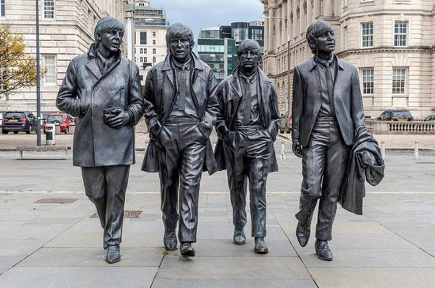
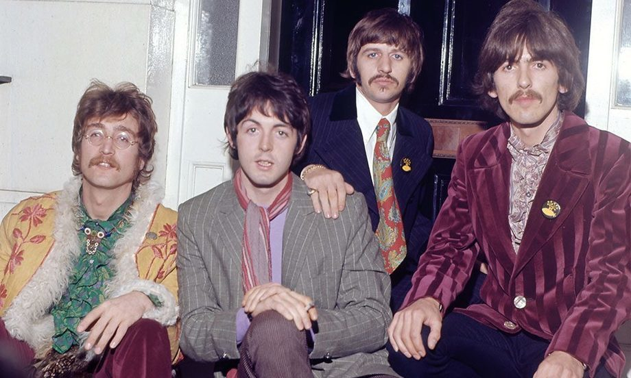
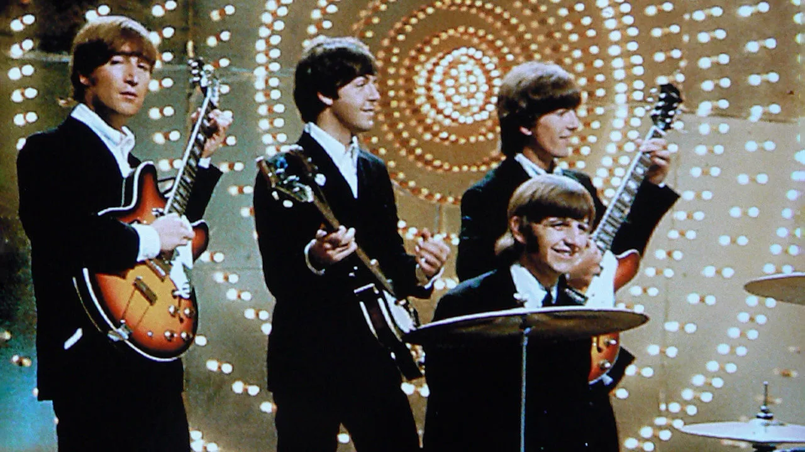
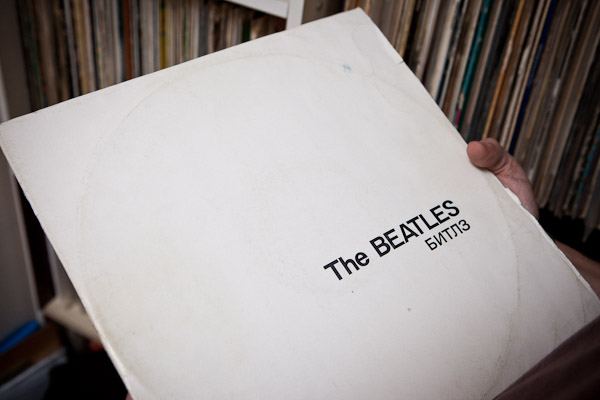
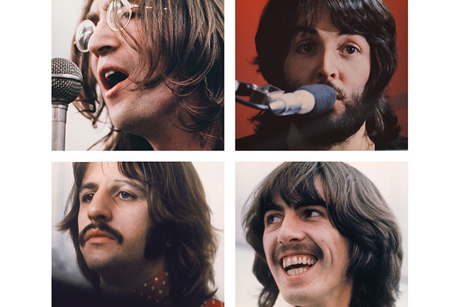
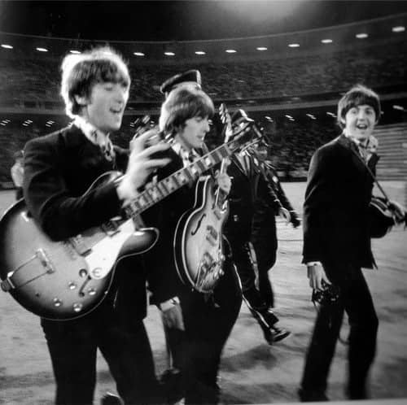

История группы






Начало
Весной 1956 года Джон Леннон вместе с товарищами по школе основал группу «The Blackjacks», которая играла в основном рок-н-ролл и поп-музыку того времени. Вскоре к ним присоединился Пол Маккартни, и группа была переименована в «The Quarrymen». В 1958 году к ним добавился Джордж Харрисон, который стал гитаристом. С течением времени состав группы менялся, и в 1960 году они приняли имя «The Beatles», которое стало символом музыкальной революции 60-х. НАЗВАНИЕ
Название
Название группы «The Beatles» произошло от игры слов на основе слова «beetles» (жуки) и «beat» (ритм). Изначально группа называлась «The Quarrymen», но в 1960 году, когда они начали развивать свой стиль, Джон Леннон предложил новое название Существует несколько версий о том, как именно было выбрано название. Одной из них является то, что оно было вдохновлено названием группы «The Crickets» (сверчки), в которой играл Buddy Holly. В результате группа решила использовать слово «beat» для отражения музыкального ритма и добавила к нему игру слов с «beetles», что дало название «The Beatles». Это название стало символом не только самой группы, но и целой эпохи в музыке.
Первые гастроли
Первые гастроли группы The Beatles начались в 1960 году, когда они начали активно выступать в клубах Ливерпуля и Глазго. Однако их первые значимые гастроли за пределами Великобритании состоялись в 1961 году, когда они отправились в Гамбург, Германия. Сентябрь 1960 – декабрь 1962: The Beatles провели несколько сезонов в Гамбурге, выступая в таких клубах, как «Indra» и «Star-Club». Эти гастроли стали важным этапом в их развитии как музыкантов, поскольку они играли по несколько часов каждую ночь и развивали свой репертуар. В Гамбурге группа столкнулась с разнообразной аудиторией и музыкальными стилями, что способствовало их росту как исполнителей. Они также познакомились с другими музыкантами и получили ценный опыт сценического выступления. Первые гастроли в Великобритании. В 1962 году The Beatles начали выступать на более крупных площадках в Великобритании. Они стали частью тура с другими исполнителями, такими как «The Swinging Blue Jeans» и «The Hollies». В это время группа начала получать внимание благодаря радиопрограммам и телевидению, что способствовало их популярности. Первая гастрольная поездка в США. В феврале 1964 года The Beatles совершили свой первый визит в США, который стал знаковым моментом в их карьере. Они выступили на шоу Эда Салливана, что привлекло огромное внимание и стало началом «битломании» — массового увлечения их музыкой по всему миру. Эти первые гастроли стали основой для дальнейшего успеха группы и их влияния на музыку и культуру 60-х годов.
Первый контракт
Первый значимый контракт группы The Beatles был подписан с лейблом EMI Records в 1962 году. Этот контракт стал важным шагом в карьере группы и открыл двери к их будущему успеху. В январе 1962 года The Beatles провели прослушивание для продюсера Джорджа Мартина на лейбле EMI. После успешного прослушивания группа подписала контракт на запись в июне 1962 года. Первоначально контракт был подписан на срок в три года и включал запись до 10 синглов. Первый сингл, выпущенный на лейбле EMI, — это «Love Me Do», который вышел в октябре 1962 года. Он стал первым шагом к их популярности, хотя и не достиг высоких позиций в чартах. Второй сингл, «Please Please Me», вышел в январе 1963 года и стал первым хитом номер один группы в Великобритании. Подписание контракта с EMI стало поворотным моментом для The Beatles, так как лейбл предоставил им возможность записывать альбомы и продвигать их музыку на массовом рынке. Сотрудничество с Джорджем Мартином также сыграло ключевую роль в музыкальном развитии группы, так как он помог им экспериментировать со звуком и аранжировками. В последующие годы The Beatles подписали новые контракты, включая более выгодные условия, которые отражали их возросшую популярность. В 1967 году они подписали контракт на рекордные 8 миллионов долларов с Capitol Records для распространения своей музыки в США.
Белый альбом
«Белый альбом» — это неофициальное название одноимённого альбома группы The Beatles, выпущенного 22 ноября 1968 года. Официальное название — The Beatles, и он стал одним из самых известных и влиятельных альбомов в истории музыки. Альбом получил прозвище «Белый альбом» из-за его минималистичного белого оформления обложки, на которой только название группы тиснено рельефом. Это контрастировало с яркими и красочными обложками предыдущих альбомов. «Белый альбом» отличается разнообразием стилей: от рок-н-ролла и попа до фолка, блюза, психоделики и экспериментальной музыки. Альбом состоит из двух дисков с 30 треками, что делает его одним из самых длинных альбомов группы.Включает такие известные песни, как «Back in the U.S.S.R.», «While My Guitar Gently Weeps», «Blackbird», «Helter Skelter» и «Revolution». Альбом был воспринят смешанно: некоторые критики отмечали его эклектичность и экспериментальность, другие считали его менее последовательным по сравнению с предыдущими работами группы. Несмотря на это, «Белый альбом» стал классикой и оказал огромное влияние на музыку и культуру. Альбом достиг первого места в чартах в нескольких странах и стал одним из самых продаваемых альбомов всех времён.
Распад группы
В конце 1960-х годов участники группы начали проявлять творческие разногласия. Каждый из них стремился к индивидуальному музыкальному самовыражению, что стало причиной напряжённости внутри коллектива. Альбом «Белый альбом» (1968) стал первым признаком этих разногласий, поскольку участники работали над своими песнями в основном по отдельности.
В 1967 году умер Брайан Эпстайн, менеджер группы, который сыграл ключевую роль в их успехе. Его смерть оставила группу без руководства и поддержки, что также способствовало возникновению внутренней напряжённости.
Участники группы стали интересоваться различными музыкальными направлениями.
Например, Джордж Харрисон начал экспериментировать с индийской музыкой, а Пол Маккартни стремился к более мелодичному звучанию. Эти различия привели к конфликтам при записи новых альбомов. Запись альбома «Let It Be» в 1969 году была полна напряжения и конфликтов. Участники группы часто спорили о музыкальных идеях и подходах к работе. В итоге, хотя альбом был выпущен в 1970 году, его запись была затруднена разногласиями между участниками. В 1969-1970 годах каждый из участников начал работать над сольными проектами. Пол выпустил альбом «McCartney», Джон Леннон — «Plastic Ono Band», Джордж Харрисон — «All Things Must Pass», а Ринго Старр — «Sentimental Journey».
В апреле 1970 года Пол Маккартни объявил о своём намерении покинуть группу и выпустил пресс-релиз, который фактически стал официальным заявлением о распаде The Beatles.
Это заявление подтвердило то, что многие уже подозревали: группа больше не могла функционировать как единое целое. После распада группа столкнулась с юридическими спорами, особенно касающимися прав на музыку и управление бизнесом. Пол Маккартни подал в суд на остальных участников группы в 1970 году, что также затянуло процесс окончательного разделения. Несмотря на распад, музыка The Beatles продолжает оставаться популярной и влиятельной. Их наследие живёт в сердцах поклонников по всему миру, а их песни продолжают вдохновлять новые поколения музыкантов.
Распад The Beatles — это не только конец одной из самых известных групп в истории музыки, но и начало новых карьер для каждого из участников, которые продолжили создавать музыку и достигли значительных успехов в сольной карьере.